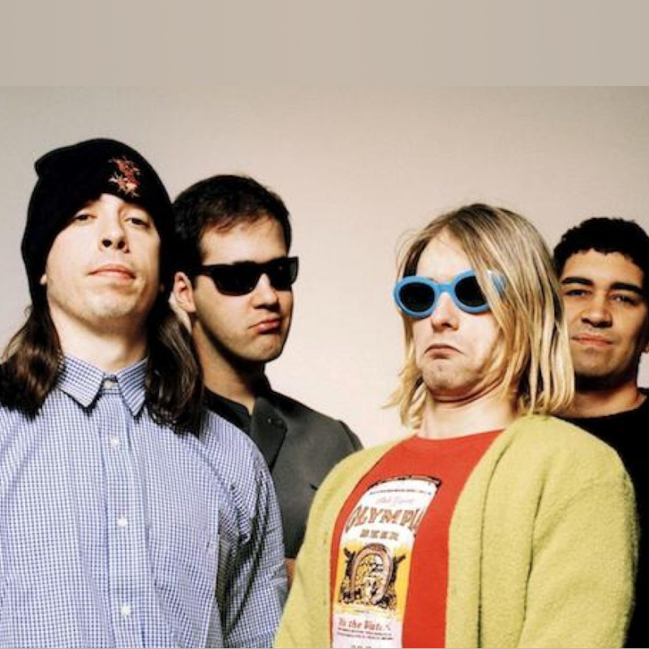
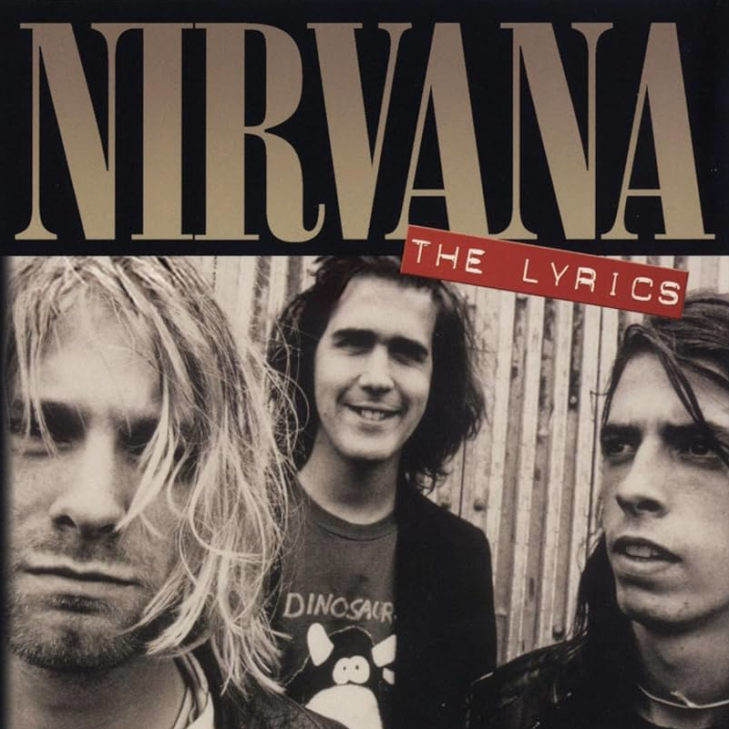
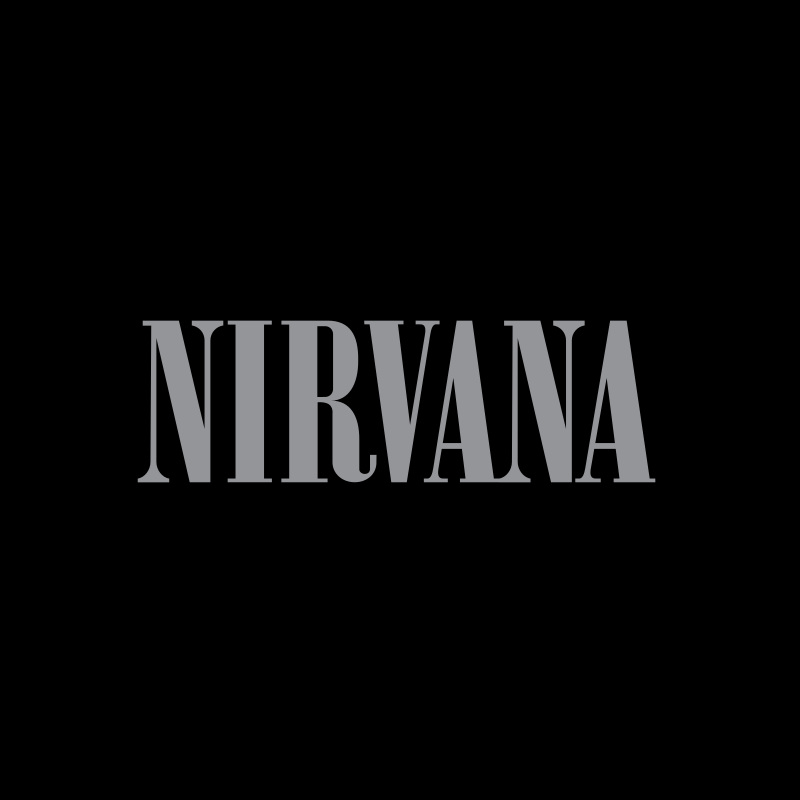
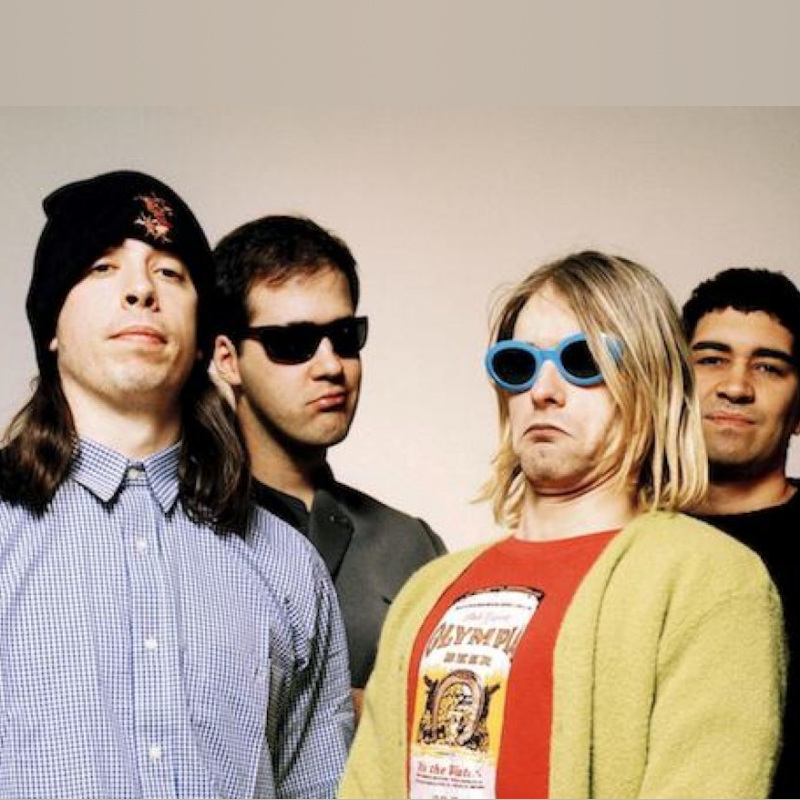
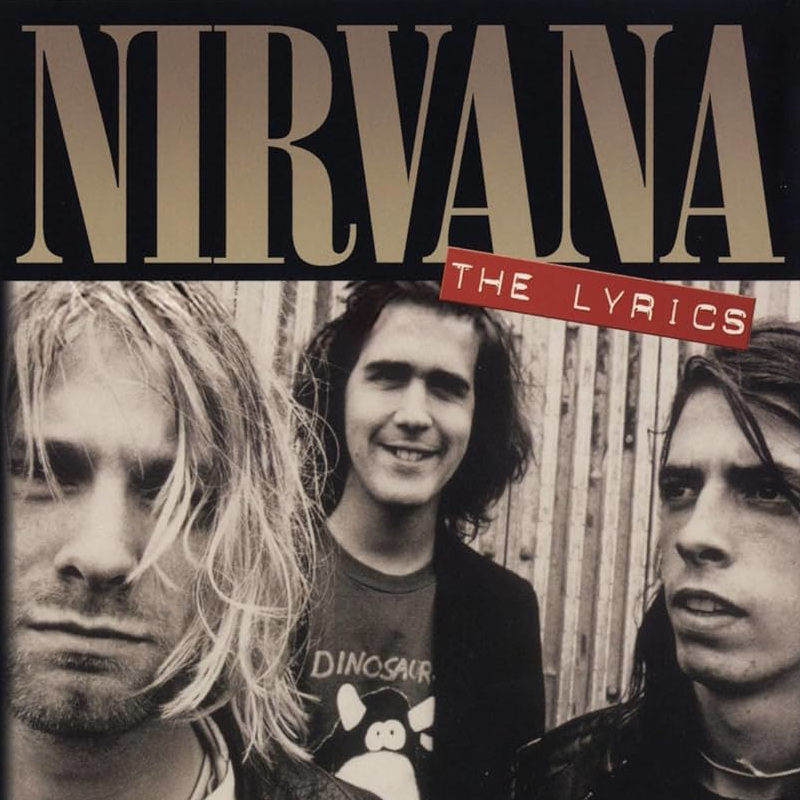
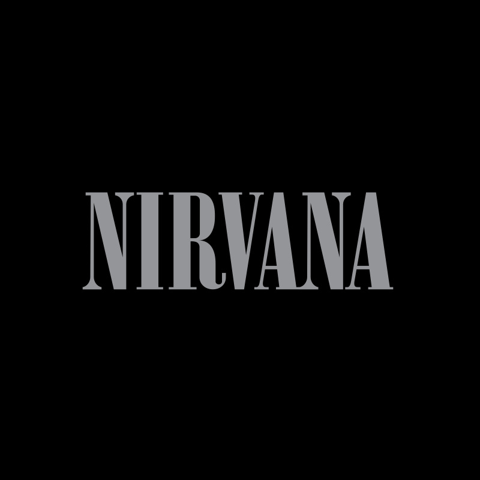

Sobre
Formação e Primeiros Anos em Aberdeen/Seattle
O Nirvana foi formado em Aberdeen, Washington, em 1987, pelo vocalista e guitarrista Kurt Cobain e pelo baixista Krist Novoselic. Após passarem por uma série de bateristas nos primeiros anos, a formação se consolidaria mais tarde. Influenciados pelo punk rock, heavy metal e rock alternativo da época (como Pixies, Melvins, Sonic Youth), eles começaram a desenvolver um som cru e energético, tocando em festas locais e pequenos clubes na cena musical underground de Seattle e arredores. Essa fase inicial foi marcada pela busca por uma identidade sonora e pela instabilidade na posição de baterista, culminando na gravação de suas primeiras demos e na assinatura com o selo independente Sub Pop.
O Álbum de Estreia e a Chegada de Dave Grohl
Em 1989, lançaram seu álbum de estreia, "Bleach", pela Sub Pop. Gravado com um orçamento mínimo, o disco apresentava um som mais pesado e denso, com influências do sludge metal dos Melvins e do punk rock. Músicas como "About a Girl" (que já mostrava a veia melódica de Cobain) e "Blew" ganharam algum reconhecimento na cena independente e em rádios universitárias. Foi durante a turnê de "Bleach" e a busca por um som mais coeso que a banda finalmente encontrou seu baterista definitivo: Dave Grohl, vindo da banda de hardcore punk Scream. A entrada de Grohl em 1990 trouxe uma potência rítmica e uma energia que complementaram perfeitamente a dinâmica da banda, solidificando a formação clássica do Nirvana.
O Fenômeno Nevermind e a Explosão do Grunge
Sentindo que haviam superado o alcance da Sub Pop e buscando uma produção mais polida, o Nirvana assinou com a major label DGC Records (subsidiária da Geffen Records). Em setembro de 1991, lançaram "Nevermind". Produzido por Butch Vig, o álbum equilibrou perfeitamente o peso e a agressividade do punk/metal com melodias pop incrivelmente cativantes. O primeiro single, "Smells Like Teen Spirit", tornou-se um hino improvável e onipresente. Seu videoclipe, exibido massivamente na MTV, capturou a apatia e a energia da juventude da época. O sucesso foi meteórico e avassalador: "Nevermind" derrubou Michael Jackson do topo das paradas da Billboard em janeiro de 1992, vendendo milhões de cópias e transformando o Nirvana na maior banda do mundo. Esse sucesso catapultou o "grunge" e toda a cena de rock alternativo de Seattle (incluindo Pearl Jam, Soundgarden, Alice in Chains) para o mainstream global, mudando a paisagem da música popular da noite para o dia.
O Som Característico e a Angústia de uma Geração
Musicalmente, o Nirvana ficou conhecido por sua dinâmica "quiet-loud" (calmo-alto), alternando versos melódicos e contidos com refrões explosivos e distorcidos. As letras de Kurt Cobain eram frequentemente introspectivas, abstratas, irônicas e carregadas de angústia, alienação e crítica social velada. Cobain, com seu carisma relutante e sua voz que variava do sussurro melancólico ao grito visceral, tornou-se o porta-voz involuntário de uma geração que se sentia deslocada e desiludida com os valores estabelecidos. A simplicidade e a crueza de suas composições, aliadas a ganchos melódicos poderosos, criaram um som que era ao mesmo tempo acessível e desafiador.
A Pressão da Fama e In Utero
O sucesso massivo trouxe consigo uma pressão gigantesca, especialmente para Kurt Cobain, que lutava contra o vício em heroína, depressão, problemas de saúde crônicos e o desconforto com o status de celebridade e "voz de uma geração". Como resposta a essa superexposição e à sonoridade mais polida de "Nevermind", a banda buscou um som mais cru, abrasivo e desafiador para seu terceiro álbum de estúdio, "In Utero", lançado em 1993. Produzido em grande parte por Steve Albini, conhecido por seu trabalho com bandas underground, o disco era intencionalmente menos comercial, com canções como "Heart-Shaped Box" e "Rape Me" explorando temas mais sombrios e desconfortáveis. Apesar de sua natureza menos palatável, "In Utero" foi aclamado pela crítica e também alcançou grande sucesso comercial, provando a força artística e a base de fãs leal da banda.
O Acústico MTV e o Fim Trágico
No final de 1993, o Nirvana gravou uma performance memorável para a série "MTV Unplugged". Diferente de muitos artistas que simplesmente tocavam seus hits em formato acústico, a banda optou por um setlist inesperado, incluindo covers de artistas que admiravam (David Bowie, The Vaselines, Lead Belly, Meat Puppets) e versões despojadas e emocionantes de suas próprias músicas menos óbvias. A performance, lançada postumamente como o álbum "MTV Unplugged in New York" (1994), é frequentemente citada como um dos pontos altos da carreira da banda, revelando a vulnerabilidade e a profundidade das composições de Cobain. Infelizmente, a trajetória da banda foi tragicamente interrompida em 5 de abril de 1994, quando Kurt Cobain foi encontrado morto em sua casa em Seattle, vítima de suicídio. Sua morte chocou o mundo e marcou o fim do Nirvana.
Legado e Influência Duradoura
Apesar de sua carreira relativamente curta (pouco mais de seis anos entre o primeiro álbum e a morte de Cobain), o Nirvana deixou um legado indelével na música e na cultura popular. Eles foram fundamentais para levar o rock alternativo ao mainstream, abrindo portas para inúmeras outras bandas e redefinindo o som do rock nos anos 90. Sua música continua a ressoar com novas gerações, abordando temas universais de angústia, identidade e rebeldia. Kurt Cobain permanece um ícone cultural, e a música do Nirvana é constantemente celebrada por sua honestidade brutal, sua energia crua e suas melodias inesquecíveis, garantindo seu lugar como uma das bandas mais importantes e influentes da história do rock.
Fonte: AllMusic Wikipédia Wikipedia(inglês)
Compositores
Kurt Cobain
Vocalista principal, guitarrista e compositor principal. Ele era responsável pela vasta maioria das letras e das melodias/estruturas musicais das canções do Nirvana.
Saiba maisKrist Novoselic
Baixista. Embora não fosse o principal compositor de letras ou melodias, suas linhas de baixo eram cruciais para a sonoridade da banda e ele colaborava nos arranjos das músicas, ajudando a moldar a estrutura final das canções trazidas por Kurt.
Saiba maisDave Grohl
Baterista (na formação mais famosa) e backing vocal. Assim como Krist, Dave contribuía significativamente para os arranjos com suas partes de bateria poderosas e dinâmicas, que ajudavam a definir a energia das músicas. Ele também adicionava harmonias vocais.
Saiba maisCuriosidades
- O Nome Antes de Nirvana: Antes de se decidirem por "Nirvana", a banda passou por vários nomes, incluindo Skid Row (já existia outra banda com esse nome), Pen Cap Chew, Bliss e Ted Ed Fred. Kurt Cobain escolheu "Nirvana" porque queria um nome que soasse bonito e agradável, em contraste com a sonoridade muitas vezes agressiva da banda, representando a busca pela libertação da dor e do sofrimento (o conceito budista).
- A Origem de "Smells Like Teen Spirit": O título da música mais famosa da banda veio de uma pichação feita por Kathleen Hanna (da banda Bikini Kill) na parede do apartamento de Kurt. Ela escreveu "Kurt Smells Like Teen Spirit" ("Kurt Cheira a Teen Spirit"). Teen Spirit era, na verdade, uma marca de desodorante popular entre as adolescentes na época. Kurt só descobriu isso meses depois do lançamento da música, ele achou que era uma frase com um significado revolucionário ou anarquista.
- Kurt Cobain Trabalhou como Faxineiro: Antes da fama, Kurt trabalhou como faxineiro em sua antiga escola de ensino médio (Aberdeen High School). Ironicamente, o clipe de "Smells Like Teen Spirit" apresenta um zelador dançando ao som da música em um ginásio escolar.
- "Nevermind" Quase se Chamou "Sheep": Um dos títulos considerados para o álbum que os lançou ao estrelato foi "Sheep" (Ovelha). A ideia era uma piada interna sobre as pessoas que comprariam o álbum sem pensar. A capa também teria uma imagem diferente.
- O Bebê da Capa de Nevermind: O famoso bebê nadando atrás da nota de dólar é Spencer Elden. Seus pais eram amigos do fotógrafo Kirk Weddle. Ele recebeu apenas $200 pelo ensaio na época e, anos mais tarde, processou a banda (sem sucesso) pela imagem.
- Aprovação de "Weird Al" Yankovic: Kurt Cobain era fã de "Weird Al" Yankovic. Quando Weird Al pediu permissão para parodiar "Smells Like Teen Spirit" (criando "Smells Like Nirvana"), Kurt achou que era um sinal de que a banda tinha "chegado lá" e deu permissão imediatamente.
- O Título Original de "In Utero": O terceiro álbum de estúdio da banda quase teve o título chocante "I Hate Myself and I Want to Die" ("Eu Me Odeio e Quero Morrer"). A gravadora e até Krist Novoselic convenceram Kurt a mudar, preocupados com a repercussão e possíveis processos. A frase acabou virando o título de uma faixa no lado B.
- Primeiro Single Foi um Cover: O primeiro single oficial lançado pelo Nirvana pela gravadora Sub Pop não foi uma música original, mas sim um cover de "Love Buzz", da banda holandesa Shocking Blue.
- Muitos Bateristas: Antes de Dave Grohl se juntar à banda em 1990 e solidificar a formação clássica, o Nirvana teve vários bateristas, sendo Chad Channing o mais notável (ele tocou na maior parte do álbum "Bleach").
- O MTV Unplugged Inusitado: Para a gravação do famoso acústico, a banda se recusou a tocar apenas seus maiores sucessos. Eles incluíram vários covers de artistas menos conhecidos (como The Vaselines e Meat Puppets, que até participaram) e pediram que o palco fosse decorado com lírios e velas pretas, dando um ar fúnebre que Kurt Cobain desejava.
Álbuns
Galeria de Imagens
 




